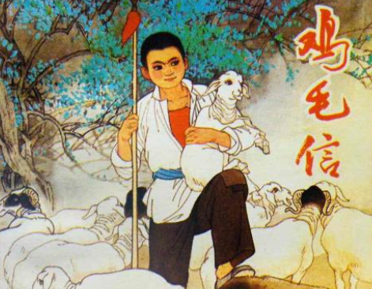

抗日小英雄的故事——儿童团团长海娃

-->
这个抗日小英雄的故事，发生在华北抗日根据地。12岁的龙门村儿童团团长海娃每一天一面放羊，一面放哨，监视着前边平川地里敌人的据点。一天，炮楼里的鬼子进山去抢粮食了，只剩下“猫眼司令”和几个鬼子兵。民兵中队长老赵画了一张攻打炮楼的路线图，并写了一封信准备把它交给八路军张连长。老赵把送信的任务交给了儿子海娃。海娃一看信封上头插了鸡毛，明白是十分重要的，他赶着一群羊作掩护送信去了。没想到，海娃在山沟里碰上了鬼子，他灵机一动，把鸡毛信拴在了“老头羊”的尾巴里，瞒过了鬼子小队长。一路上海娃受尽了折磨。深夜海娃好不容易从睡得像死猪一样的鬼子的腿缝里溜了出来。他赶到羊圈里，细心地把鸡毛信取了下来，一口气跑了几里路。后面伪军也追来了，海娃又被他们抓回去。他把鬼子带到了一条山路上，鬼子的骡马不能爬陡峭的山坡，海娃乘机拼命往山上爬，愈爬愈远，鬼子开枪打中了海娃的手。海娃忍着疼拉开嗓子喊“八路军叔叔”海娃把鸡毛信交给了张连长。